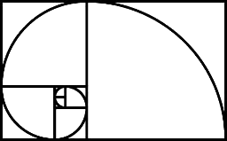
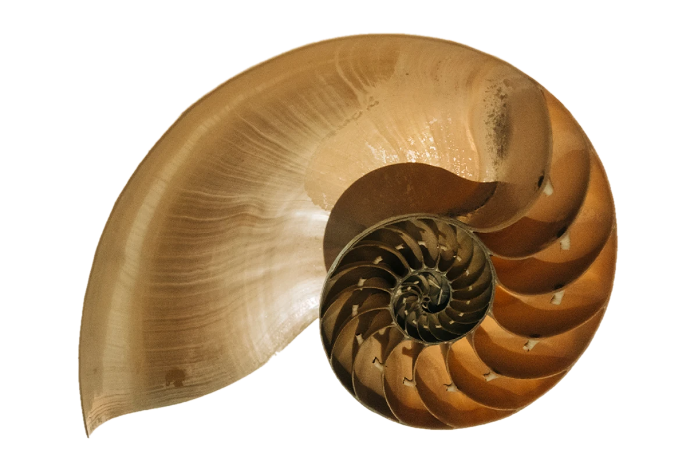

Progressões matemáticas são sequências de números em que a diferença entre termos consecutivos é constante. Existem três tipos principais: progressão aritmética (PA), em que a diferença entre termos consecutivos é constante; progressão geométrica (PG), em que a razão entre termos consecutivos é constante; e progressão aritmética-geométrica (PAG), que combina elementos das duas. Essas progressões são úteis em diversas áreas da matemática e têm aplicações em problemas do mundo real.
PA: PG:Uma Progressão Aritmética (PA) é uma sequência numérica em que a diferença entre quaisquer dois
termos consecutivos é sempre a mesma constante, chamada de "razão" ou "diferença comum." Isso
significa que, à medida que você avança na sequência, a cada termo, você adiciona ou subtrai a
mesma quantidade.
A forma geral de uma PA é representada por:
A progressão geométrica (PG) é uma sequência de números em que cada termo, a partir do segundo, é obtido multiplicando o termo anterior por uma constante fixa chamada de "razão". A fórmula geral para uma progressão geométrica é:
an=a1×r(n−1)Sequência de Fibonacci é a sequência numérica proposta pelo matemático Leonardo Pisa, mais conhecido
como Fibonacci:
Exemplo: 1, 1, 2, 3, 5, 8, 13, 21, 34, 55, 89, 144, 233, 377, 610, 987.....
Foi a partir de um problema criado por ele que o mesmo detectou a existência de uma regularidade
matemática.
Trata-se do exemplo clássico dos coelhos, em que Fibonacci descreve o crescimento de uma população
desses animais.
- A sequência é definida mediante a seguinte fórmula: >
Fn=Fn−1+Fn−2 .
Assim, começando pelo 1, essa sequência é formada somando cada numeral com o numeral que o antecede. No caso do 1, repete-se esse numeral e soma-se, ou seja, 1 + 1 = 2. De seguida soma-se o resultado com o numeral que o antecede, ou seja, 2 + 1 = 3 e assim sucessivamente, numa sequência infinita.
A partir da sequência de Fibonacci, pode ser construído um retângulo, que é chamado de Retângulo de Ouro.
Ao desenhar um arco dentro desse retângulo, obtemos, por sua vez, a Espiral de Fibonacci. A verdade é que a sequência de Fibonacci pode ser percebida na natureza.
São exemplos disso as folhas das árvores, as pétalas das rosas, os frutos como o abacaxi, as conchas espiraladas dos caracóis ou as galáxias.